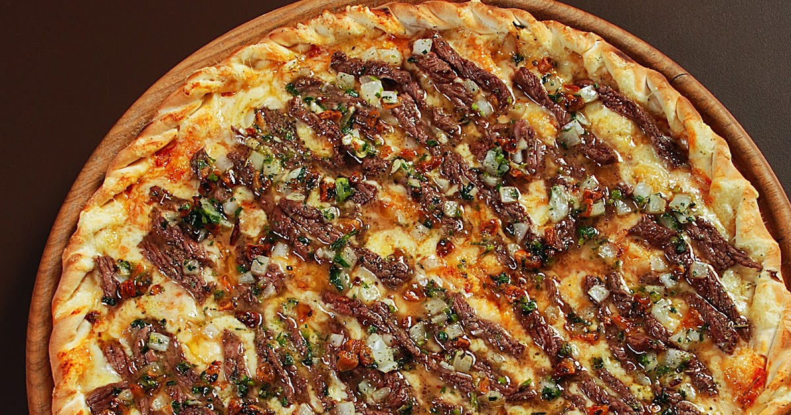

Experimente nossas receitas doces irresistíveis para satisfazer seu doce Vício

Bolo de fubá caseira
Bolo de fubá caseiro é uma receita simples e fácil de fazer. O bolo de fubá é uma receita tradicional e muito saborosa. Confira a receita e faça hoje mesmo!
Confira a receita

Receita de pizza de picanha
Experimente essa deliciosa pizza de picanha com ingredientes de alta qualidade e um sabor incrível. Um prato fácil e rápido para satisfazer seu paladar.
Confira a receita